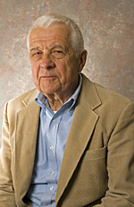

George Basalla

Descripción autor:
Historiador de ciencias y profesor de historia en la Universidad de Delaware. Nacido es Pennsylvania, Estados Unidos, ha colaborado en numerosas obras sobre ciencia y tecnología como "Science and the Enlightenment" y "Man and Nature in the Renaissance". Su último título publicado es Civilized Life in the Universe: Scientists on Intelligent Extraterrestrials, 2006.
La Evolución de la Tecnología
Síntesis texto
En el texto, George Basalla expone tres ideas principales dentro de la "Evolución de las tecnologias", el destaca la diversdiad, la necesidad y la evolucion como centro de ella.
La diversidad en primera instancia se señala, tal como su explicacion científica la define, como la aparicion de nuevas vidas en el tiempo con la capacidad de variabildad reproductora. Se recalca la idea de que existen muchas diferencias entre lo hecho y lo nacido, uno produce un objeto esteril y otro un ser vivo capaz de reproducirse
Para que las tecnologias se hayan desarrollado "La necesidad" fue clave para sdafr paso a lo que conocemos hoy en día, la invesión de nuevos objetos esta extrcitamente arraigada a las necesidades del humano, las cuales en un principio eran necesidades bases y a lo largo del tiempo estas necesidad se hacian mas relativas llegando a ser una categoria conceptual creadad por eleccion cultural.
Finalmente el "Cambio Acomulativo" es como entendemos el progreso de las tecnologías del mundo actual, se debe reconocer los cambios mayores de inventores indivuduales, Basalla define por ende cuatro conceptos: diversidad, continuidad, novedad y selección.
Ideas principales
Idea 1: Bajo la idea de la evolucion, es interesante ver como el diseño y todos sus componentes a pesar de ser creados por el hombre viven los mismos procesos que las especies de la naturaleza, la idea de la evolucion de Darwin, en que sobreviven los mas fuertes o se adaptan al ambiente, la veo muy reflejada en el diseño. Como algunas modas siguen y otras no logran sobrevivir, como objetos del diseño industrial se van adaptando a las necesidades, como han evolucionado las tecnologias desde los inicios a lo que tenemos ahora en nuestras manos, un celular.
Idea 2: Llega a ser impresionante como la disciplina del Diseño llego al a tal punto que "diseño" necesidades para las personas, el impacto que tiene esta area de conocimiento es gigantesco, paso de crear para el bien humano a crear por el bien de consumir. Las personas vivimos con tantos estimulos que se nos olvida cuales son nuestras reales necesidades básicas.
Idea 3: Contemplando el "Cambio Acomulativo", Es dificil crear en el mundo actual siendo novedoso. ¿Como uno encuentra el equilibrio entre inspirarse de objetos ya creados sin copiarlo? si ya se que funcionan ciertos objetos ¿Porque deberiamos seguir creando nuevos?. .